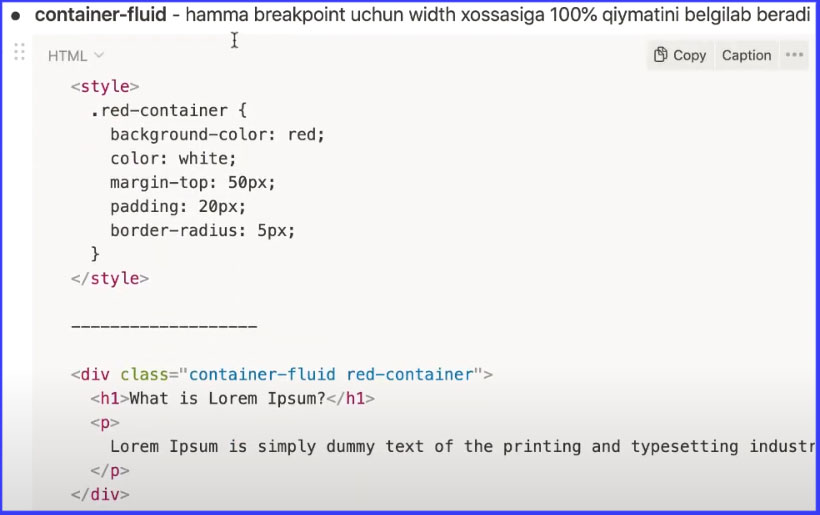
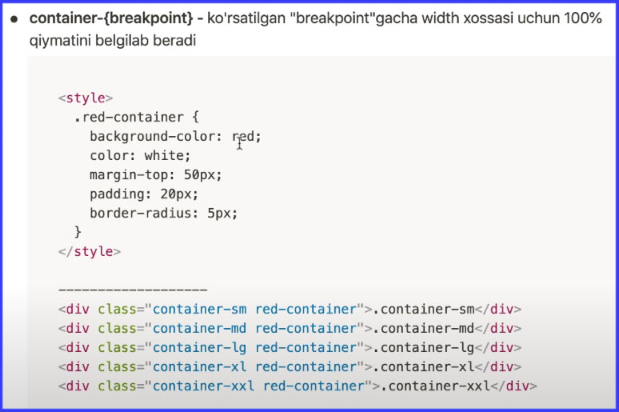
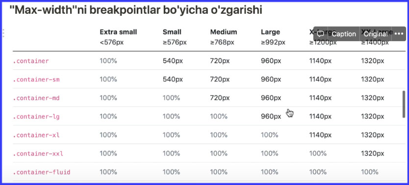

npm install react-bootstrap bootstrap
import 'bootstrap/dist/css/bootstrap.min.css'
Yangi HTML sahifasi Bootstrap CSS va JavaScipt bilan
Quyidagi usul Bootstrapni sahifasidan ulanib ishlatish uchun
Quyidagi usul esa local ulanish usuli
Breakpoints - qurilmamizning kengligiga qarab veb sahifamiz o'z kontenti o'zgartiruvchi nuqtalar. Bu nuqtalar, veb sahifamiz ofatda boshqa ko'rinishga o'tib, qurilmaga moslashadi. Bootstrap o'zining breakpoint qiymatlariga ega
! Bootstrap freymvorki Mobile-first yondashuv asosida qurilgan bo'lib,uning yordamida
birinchi kichik o'lchamga ega bo'lgan qurilmalarga veb sahifa yaratib olinib,keyin esa
kattaroq o'lchamga ega bo'lgan qurilmalar uchun moslanadi
Mavjud Breakpointlar
min-width yordamida(mobile-first)
max-width yordamida
Container - Bootstrapning asosiy qismlaridan biri bo'lib,uelementlarni o'zida saqlash, surish va markazga joylashtirish uchun ishlatiladi.Bootstrapning Grid tizimini ishlatish uchun"container"dan foydalanish majburiy hisoblaniladi
3 xil turi mavjud
1. container - har bir breakpoint uchun max-width xossasiga qiymatini belgilab beradi
2. container-fluid - hamma breakpoint uchun width xossasiga 100% qiymatini belgilab beradi

3. container-{breakpoint} - ko'rsatilgan "breakpoint"gacha width xossasi uchun 100% qiymatini belgilab beradi

Max-widthni breakpointlar bo'yicha o'zgarishi

Grid tizimi(system)-mobile-first yondashuviga asoslangan,12 ustun yordamida har xil ko'rinishdagi"layout"lar yaratish imkoniyati beruvchi tizim.Grid bir necha CSS klasslar to'plamidan iboratdir.Grid container,row(qator)va column(ustun)lardan iborat tizim hisoblanadi
1. Rows(qatorlar) har doim container ichida joylashgan bo'lishi kerak
2. Gorizontal ustunlar guruhini yaratish uchun rows(qatorlar)dan foydalaning
3. Kontent har doim columns(ustunlar) ichida joylashadi
4. col klasi bo'lmasa to'liq qatorni egallaydi
Ustunga ma'lum bir kenglik ko'rsatish uchun .co/-*klassidan foydanalib,yulduzcha(*) o'rniga 1dan 12gacha bo'lgan qiymat berish mumkin.Masalan:.col-6
Bootstrapning Grid tizimi yordamida turli xil o'lchovga ega bo'lgan qurilmalar uchun moslashuvchi(responsive)layout yaratish imkoniyati mavjud.Uning uchun Bootstrap "breakpoint"larining"class infix"dan foydalaniladi
Grid tizimi qatorlarni ichma-ich(nested)joylashtirish imkoniyatini beradi.Uning uchun ustun(column)ichida qator(row)ochish kifoya bo'ladi
Columns(ustunlar) - Bootstrap Grid tizimining asoslaridan biri bo'lib, uqatorni(row) bir necha bo'laklarga bo'lib,o'z ichida kontent saqlash uchun ishlatilinadi
Flexbox klasslari yordamida ustunlarni vertikal va gorizontal joylashuvini o'zgartirish mumkin
Vertikal joylashtirish
Agar bir qatorga 12dan ko'p ustun joylashgan bo'lsa, ortiqcha ustunlar guruhi keyingi qatordan joylashadi
Flexbox klasslari yordamida ustunlarni tartibini o'zgartirish mumkin: .order-* klasslaridan foydalanib, yulduzcha(*) o'rniga Odan 5gacha bo'lgan qiymatlarni ko'rsatib,ustunlarni ketma-ketligini o'zgartish mumkin.Order klasslariga breakpointlarning "infix" larini qo'shish imkoniyati mavjud va u .order-{breakpoint}-* ko'rinishida bo'ladi.
Offseting columns - ustunlarni o'ng tarafga surish hisoblanib, Bootstrapning maxsus klasslari yordamida amalga oshiriladi. Umumiy ko'rinishi. offset-(breakpoint}-* bo'lib yulduzcha o'rniga 0dan 12gacha bo'lgan qiymat beriladi.
Gutters - ustunlar orasidagi masofani belgilab beradi
Ishlash qoidalari:
1. Gutters gorizontal padding yordamida ustunlar orasida hosil qilinadigan masofadir
2. Gutters default ko'rinishda 1.5rem (24px) masofaga ega bo'ladi
3. Gutters moslashuvchan hisoblanib, bir breakpointdan ikkinchi breakpointga o'tgan o'zgarishi mumkin
Gorizontal gutter yaratish uchun .gx-* (gutter x-o'qi) klassidan foydalaniladi va yulduzcha(*) o'rniga 0 dan 5 gacha bo'lgan qiymat ko'rsatiladi. Qiymat qancha katta bo'lsa masofa ham kattalashib boradi.
Vertikal gutters yaratish uchun .gy-* (gutter y-o'qi) klassidan foydalaniladi va yulduzcha(*) o'rniga 0 dan 5 gacha bo'lgan qiymat ko'rsatiladi. Qiymat qancha katta bo'lsa masofa ham kattalashib boradi.
Vertikal va gorizontal gutter yaratish uchun .g-* klassidan foydalaniladi va yulduzcha(*) o'rniga 0 dan 5 gacha bo'lgan qiymat ko'rsatiladi. Qiymat qancha katta bo'lsa masofa ham kattalashib boradi.
Responsive gutters yaratish uchun .gx-{breakpoint}-*, gy-{breakpoint}-* va .g-{breakpoint}-* klassidan foydalaniladi va yulduzcha(*) o'rniga 0 dan 5 gacha bo'lgan qiymat ko'rsatiladi, breakpoint o'rniga esa sm, md, lg, xl va xxl qiymatlari ko'rsatilishi mumkin. Qiymat qancha katta bo'lsa masofa ham kattalashib boradi.
.g-0 klassi orqali gutter olib tashlanadi
Typography (tipografiya) - harflar va matnlarni o'quvchiga tushunarli va aniq yetkazib berish san'ati hisoblanadi. U font turlari, ko'rinishi va boshqa xossalarni o'z ichiga oladi. U font turlari, ko'rinishi va boshqa xossalarni o'z ichiga oladi. Boshqacha qilib aytganda, tipografiya matnimizni o'quvchi uchun qulay ko'rinishga olib keladi.
Bootstrap xar bir qurilma va operatsion tizim uchun maxsus font-famiy ishlatib, matnlarni qulay ko'rinishda chiqishini ta'minlaydi
Ajralib turadigan sarlavhalar yaratish uchun Bootstrap maxsus klasslaridan foydalanish mumkin va ular Display headings nomlanadi
Bootstrap xatboshilar uchun o'z stilini qo'llaydi
Xatboshini boshqa xatboshlaridan ajralib turishi uchun maxsus klass nomidan foydalaniladi
Bootstrap ro'yhatlar bilan ishlash uchun o'zining klasslari mavjud
Bootstrapning rasmlarni moslashuvchan qilish uchun va ularga style berish uchun maxsus klasslari mavjud
Bootstrapning .img-fluid klassi rasmlarni moslashuvchan qilish uchun ishlatilinadi va uning yordamida veb sahifaga joylashtirilayotgan rasm hech qachon ota-ona (parent) elementdan katta bo'lib ketmaydi
rasmga ramka qo'yib beradi
Rasmni qirralarini shaklini o'zgartiradi
Bootstrapda figure yordamida rasm va matnni birga ekranga chiqarish imkoniyati mavjud
Bootstrap yordamida turli xil ko'rinishga ega bo'lgan jadvallar tuzish imkoniyati mavjud
1. Rangli jadvallar - calss "table-primary
2. Zebra-chiziqli jadvallar, Zebra chiziqli jadvallar class "table-striped"
3. Hoverable jadvallar class "table-hover"
Hover bo'lganda rangini o'zgartiradi
4.Chegarali jadvallar class "table-bordered"
5. Chegarali jadvallar class "table-borderless"
6. Ixcham jadvallar class "table-sm"
7. Moslashuvchan jadvallar
.table-responsive - klassiga qo'shimcha ravishda .table-responsive-{breakpoint} klassidan foydalanib, faqatgina ma'lum bir breakpointgacha responsive bo'lgan jadval yaratish mumkin
{kind=link}
{kind=link}
{kind=link}
{kind=link}
{kind=link}
{kind=link}
{kind=link}
{kind=link}
{kind=link}
{kind=link}
{kind=link}
{kind=link}
{kind=link}
{kind=link}
{kind=link}
{kind=link}
{kind=link}
{kind=link}
{kind=link}
{kind=link}
{kind=link}
{kind=link}
{kind=link}
{kind=link}
{kind=link}
{kind=link}
{kind=link}
{kind=link}
{kind=link}
{kind=link}
{kind=link}
{kind=link}
{kind=link}
{kind=link}
{kind=link}
{kind=link}
{kind=link}